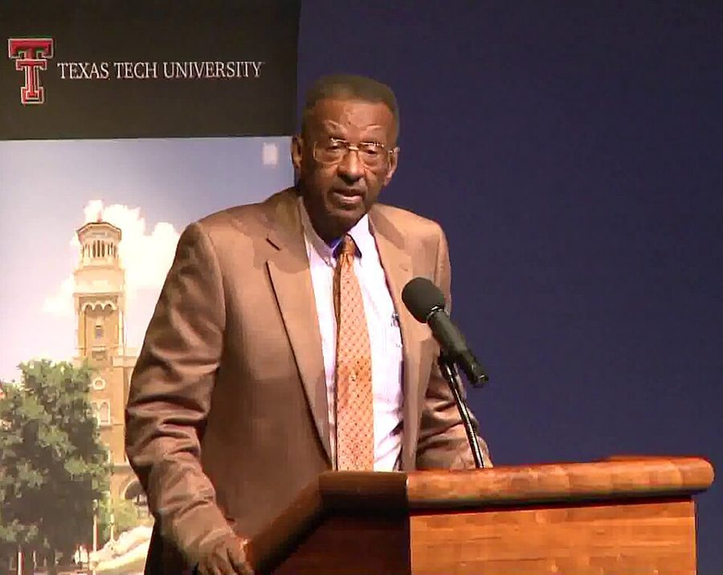
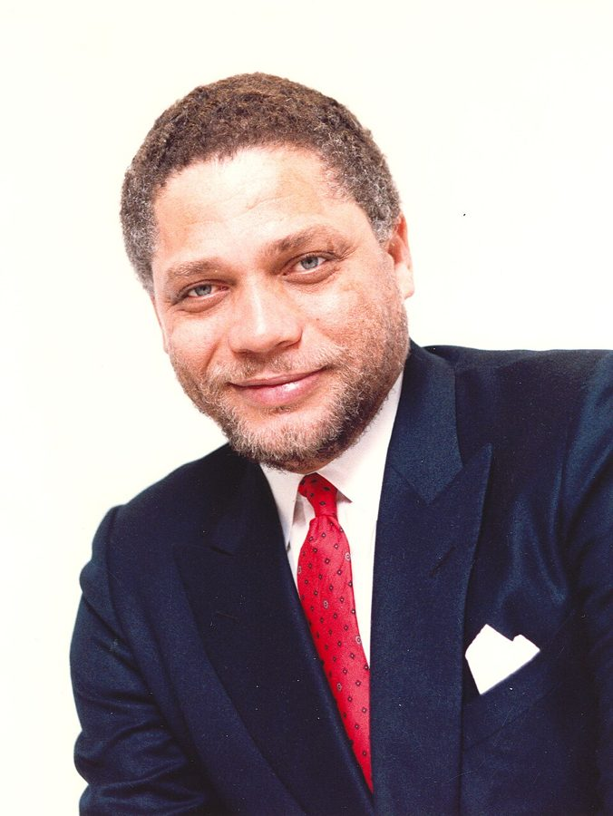
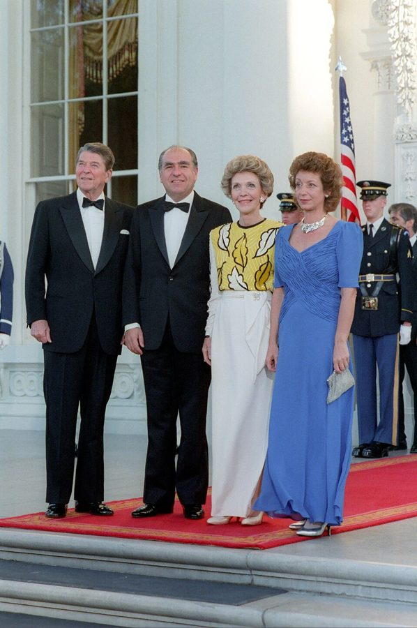
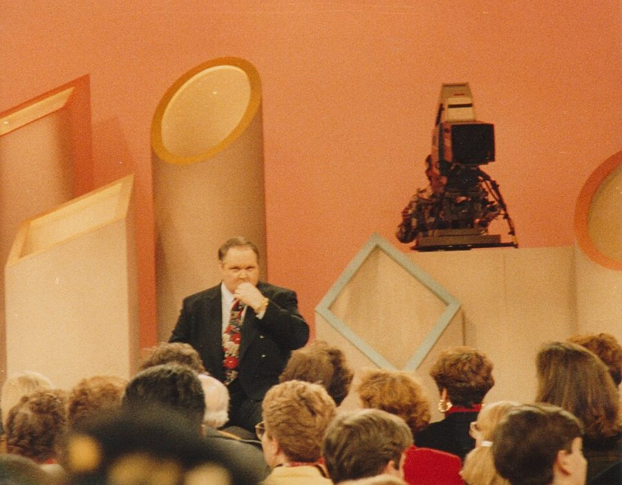
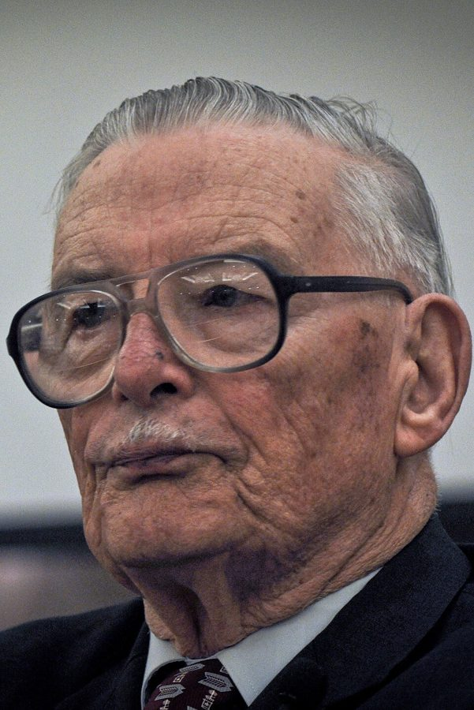

这一页在做什么
这一页从 1978 年一直写到 2010 年动笔写书，是全书经历部分的最后一段。几件事：加入 Mont Pelerin 学会；在国会作证，和议员当面争再分配、争 Davis-Bacon 法；推掉里根政府劳工部副部长的位子；1992 年起替 Rush Limbaugh 代班主持电台；1995 到 2001 年当经济系主任。读的时候抓两条线：他怎么对待手里有权的人（议员、部长、校方）；他拿什么证据说 Davis-Bacon 法是一部挡黑人的法律。

2013 年 9 月，Williams 在得克萨斯理工大学演讲，讲政府在自由社会里的角色。图片说明里他的头衔是 George Mason 大学的 John M. Olin 讲席教授，就是 §8 第 122 段说的那个讲席。Free Market Institute at Texas Tech University，CC BY 3.0，维基共享资源 读之前：这一页在他一生的哪里
上一页写到八十年代黑人保守派挨的骂、南非和撤资的争论。这一页先退回 1978 年，再一路写到 2010 年他七十四岁写这本书；各节按事情分，年份前后交错。这些年里，里根 1981–1989 年执政，共和党 1981 年起掌握参议院，主张小政府的经济学家常被请去国会作证；1987 年联邦通信委员会废除要求广播「平衡报道」的公平原则以后，保守派谈话电台兴起。
读的时候带着这几个问题。不用先找答案，读完回来对照「检查一下理解」。
他说 Davis-Bacon 法是为了挡住黑人。他拿出的证据，说明的是这部法律当初为什么通过，还是它后来造成了什么？§5
Leland 说政府要帮不能自助的人，他说那叫慈善。两人是在争事实，还是在争一个词？§5
副部长的位子，他推掉时给了几条理由？哪一条是 Friedman 的，哪几条是他自己的？§6
当系主任时和校方的过节，后来为什么缓和了？哪些是他知道的，哪些是他猜的？§8
1978 Mont Pelerin 学会香港会议，认识 Leon Louw §4
1980 进劳工部交接组，第一天中午前辞职 §6
1981.4 参议院劳工委员会：谈 Davis-Bacon 法 §5
1981.12 再去作证，开口就说议员拿钱买票 §5
1983.4 众议院特别委员会：和 Leland 争 IRS §5
1992.10 第一次替 Rush Limbaugh 代班 §7
1995 全系一致选他当经济系主任 §8
2001 卸任，Boudreaux 接任 §8
2003 同事为他办致敬会（照片图注） §8
2010 七十四岁，写完这本书 §8
本站示意图：这一页里书中给了年份的事。§5 先讲 1983 年，再回头讲 1981 年；副部长那顿午饭和那次国宴，书里没写年份，图上不标。 分节地图
这一页是原书第 6 章的后五节（§4–§8），也是全书最后一段经历，后面只剩第 7 章的回顾。粗体是这一节的地标；斜体是英文这一节开头的几个词，在 Kindle 里搜它就能跳到那里，错字照电子书原样。读完打个勾。
Mont Pelerin 学会，香港的会约 300 词 In 1978, I was invited … 学会的来历和几位当过高官的会员；第 80 段交代了南非之行从哪来。 Leland 和 IRS，Hatch 和 Davis-Bacon约 900 词 During the Reagan years, I continued … 三次听证。先讲 1983 年，再回到 1981 年；第 86 段是 1931 年议员的原话。 交接组、副部长和一次国宴约 500 词 I had a minor government involvement … 三次和里根政府擦肩。留意他推掉职位时给的几条理由。 电视、电台，替 Rush 代班约 400 词 During the late '7os and … 小标题是双关：come on with a rush 是来势猛，Rush 又是 Limbaugh 的名字。 当经济系主任的六年约 1500 词 In 1995, several of my George … Sowell 那句话、和院长校长的过节、募款；最后两段收在写书的时候。
出场的人
按出场顺序。书里的家人和同事只写书里说的；公众人物写生卒年。
Milton Friedman 1912–2006，经济学家，前几章出过场 第 78 段：Mont Pelerin 学会的发起人之一。第 96–97 段：听说作者可能去劳工部，第二天就打电话劝他别去。第 100 段：作者上过他的电视系列片 Free to Choose 的辩论。
Leon Louw 上一页出过场 第 80 段：作者 1978 年在 Mont Pelerin 学会香港的会上认识他，此后几次受邀去南非。上一页说他们一家在南非是「名誉白人」的，也是他。
Mickey Leland 1944–1989，得克萨斯州的民主党众议员，公众人物 第 83–84 段：1983 年 4 月，在众议院儿童、青年和家庭特别委员会的听证上，不同意作者说政府项目对少数族裔有害，两人越吵越凶，最后他喊出了感谢 IRS 那句。
Ray Marshall 1928 年生，卡特政府的劳工部长，公众人物 第 85–88 段：当部长时在众议院的小组委员会作证，说 Davis-Bacon 法对非工会工人和黑人没有歧视作用。作者把他在得克萨斯大学当教授时写的劳动经济学教科书复印给参议员看。
Orrin Hatch 1934–2022，犹他州的共和党参议员，公众人物 第 88–94 段：1981 年起主持参议院劳工委员会。问作者 Marshall 为什么改口，听完说两人想法真接近；年底又请作者来作证，听了「议员买票」的话，说他同意。同一场上，参议员 Ted Kennedy 起身离席。
Raymond Donovan 1930–2021，里根的劳工部长，公众人物 第 96–98 段：请作者吃午饭，商量让他当副部长。作者出于礼貌赴约，本就无意接受；接到 Friedman 的电话后，打电话回绝了他。
Connie 作者的妻子 第 99 段：见他推掉好几次国宴邀请，「威胁」他至少去一次；回家路上又挖苦他以前不去有多聪明。
Rush Limbaugh 1951–2021，电台主持人，公众人物 第 101–104 段：保守派谈话节目的主持人。1992 年他的电话筛选员先请作者上节目接受采访，后来又问作者愿不愿代班；作者先和他本人通了话，确认他没意见。
Thomas Sowell 1930 年生，经济学家，作者的老朋友 第 105–106 段：1995 年作者想推掉系主任，第一个去问他，指望他帮着找推辞的理由，他却说那大概轮到你了。
James Buchanan 1919–2013，经济学家，公众人物，第 5 章出过场 第 107 段：作者称他为 George Mason 的同事、UCLA 时的导师，1986 年得诺贝尔经济学奖。第 118 段：系里的两位诺贝尔奖得主之一。
David Potter 文理学院院长，后升教务长 第 108 段：作者当系主任初期，求他批准补人，他更想把资源挪去办 New Century College。作者说他把资源从高价值的用途挪到了低价值的用途。
Daniele Struppa 数学家，继任的文理学院院长，第 5 章出过场 第 115–118 段：劝作者别竞选连任，说真正反对他的是校长 Alan Merten。多年后承认自己被误导了；作者卸任时，他当众说作者把经济系建成了学院里最强的系。两人后来成了朋友。
背景：作者默认你知道的事
按在书里出现的顺序排，标题前是节号。这里只讲事情本身，作者怎么看放在后面几节。
§4 Mont Pelerin 学会
从 Mont Pèlerin 山上往东望日内瓦湖的东端，摄于 2015 年。与本书无直接关系：学会就是在这座山上的村子里成立的。Ypsilon from Finland，CC0，维基共享资源
1947 年 4 月，Hayek（哈耶克）召集一批主张自由市场的学者，在瑞士日内瓦湖北岸 Vevey 镇上方的 Mont Pèlerin 村开会，会址是一家叫 Hotel du Parc 的旅馆，学会就以地名命名。常见的说法是到会 39 人；书里第 78 段写的是 Hayek、Friedman 和另外 34 位，两个数对不上。学会不是政党，不发表政治纲领，几十年里是自由意志主义和自由市场经济学家交流的地方。Hayek 1974 年、Friedman 1976 年先后得了诺贝尔经济学奖。第 79 段的 Lac Leman 是日内瓦湖的法语名。
§5 国会听证和 C-Span
Mickey Leland 的国会资料照片，摄于 1989 年以前。Biographical Directory of the United States Congress，公有领域，维基共享资源 美国国会的立法和调查大多先在委员会里做。委员会开听证会（hearing），请官员、学者、利益团体来作证（testify）：先念书面证词，再接受议员当场提问，全程记录在案。第 82 段的 C-Span 是一家非营利的有线电视台，1979 年开播，专门直播国会。1980 年大选后共和党拿下参议院，Hatch 1981 年起任参议院劳工委员会主席（这个委员会今天叫卫生、教育、劳工和养老金委员会）。第 83 段的特别委员会（select committee）是众议院为某个专题设的委员会。
§5 Davis-Bacon 法1931 年 3 月由胡佛总统签署，以两位提案人命名：宾夕法尼亚州参议员 James J. Davis 和纽约长岛的众议员 Robert Bacon。它规定：联邦出钱的建筑工程，承包商付给工人的工资不得低于劳工部认定的当地通行工资（prevailing wage）。起初只管 5,000 美元以上的合同，1935 年降到 2,000 美元。起因常被追溯到 Bacon 选区里的一所退伍军人医院：中标的阿拉巴马承包商带来了南方的黑人工人，工资远低于当地。第 85–87 段作者讲的就是这段立法史。它的道理和争论，见下一节。
§6 新总统的交接，副部长和国宴
1986 年 6 月 17 日，为乌拉圭总统 Sanguinetti 办国宴之前，里根夫妇（左一、左三）和 Sanguinetti 夫妇在白宫北门廊。President (1981-1989 : Reagan). White House Photographic Office，公有领域，维基共享资源 美国总统 11 月当选、次年 1 月 20 日就职，中间两个多月由交接团队（transition team）进驻各部，了解在办的事，给新政府提建议。部长、副部长（deputy secretary，部里的二号人物）由总统提名，要经参议院听证和表决确认（confirmation）。国宴（state dinner）是白宫招待来访国家元首的正式晚宴。第 99 段乌拉圭总统那一场，书里没写年份；里根任内乌拉圭总统 Sanguinetti 1986 年 6 月国事访问时白宫办过国宴，多半就是这一场。
§7 Rush Limbaugh 和谈话电台
Limbaugh 在纽约上 Phil Donahue 的电视访谈节目，据图片说明拍于 1990 到 1992 年间。作者第一次替他代班是 1992 年 10 月。Eddie~S，CC BY 2.0，维基共享资源 talk radio 是主持人谈时事、听众打电话进来的广播节目。Limbaugh 的节目 1988 年起全国联播，工作日中午三个小时，以嘲讽自由派出名，是保守派谈话电台的头号人物。主持人休假时由代班主持（guest host / substitute host）顶替；call screener 是先接听众电话、挑人上节目的工作人员。第 100 段那串节目名屏幕上没有斜体：Free to Choose 是 Friedman 1980 年的电视系列片，Firing Line 是 Buckley 主持的访谈辩论节目，Nightline、Face the Nation、Crossfire 都是新闻和辩论节目。
§8 系主任、院长和校董会美国大学的系主任（chair）管排课、招人、预算，但对教授没有多少管束的权力。在 George Mason，系主任由全系教员选，再由校长批准或否决（第 116 段）。系上面是学院的院长（dean），再上面是教务长（provost）和校长（president）。弗吉尼亚州立大学的校董会叫 Board of Visitors，成员由州长任命，第 113 段的 Gilmore 州长就是这样换进了一批新校董。讲席教授（endowed chair）的薪水由捐款出，第 122 段的 Olin 是长期资助自由市场学术的基金会之一。
§8 系里的两位诺贝尔奖得主
James Buchanan，摄于 2010 年。Atlas Network Official website，CC BY-SA 3.0，维基共享资源 Buchanan 是公共选择学派的开创者之一（见下一节），1968 年到 UCLA 教过一年书，1983 年起在 George Mason，1986 年得诺贝尔经济学奖。Vernon Smith（1927 年生）是实验经济学的奠基人，在实验室里用真人做市场和拍卖的实验。书里说他是作者当主任最后一年请来的，一年后得奖；诺贝尔奖委员会的记录是 2002 年，和 Daniel Kahneman 同得，得奖时的单位是 George Mason。
§8 写完这本书以后第 123 段说，七十四岁的他希望最后的日子就像写书时一样：教书、写作，偶尔上电台电视。2020 年 12 月 1 日（有的讣告写 2 日），Williams 在弗吉尼亚去世，享年 84 岁。据《黑人高等教育学刊》和《纽约时报》的讣告，他当天刚在 George Mason 上完一堂课；《纽约时报》引他女儿的话说，他是下课后在车里突然去世的。两个多月后，2021 年 2 月 17 日，Limbaugh 因肺癌去世。
先用中文过一遍：这一页的经济学
作者讲到经济学的地方，这里先从书外把道理讲一遍：它是什么、经济学一般怎么分析。它在这一页起什么作用，看每块最后一句。讲过的概念都汇总在经济学概念 。
§5 Davis-Bacon 法 Davis-Bacon Act, prevailing wage 它定的是联邦工程里的一种工资下限：不是全国一个数，而是按地区、按工种（木工、电工、砖瓦工……）由劳工部定一个「当地通行工资」。一般的分析是：工资被定在市场价以上，承包商就少了一个竞争手段，原本靠开价低、肯少拿钱来抢活的一方（外地的、不在工会的、经验少的）失去优势；好处落在已经拿高工资的工人和本地承包商身上，多出的成本由纳税人付。支持者的看法相反：政府是最大的买家，不该带头压工资，这条法防止承包商比谁给工人的钱少，也保住了工程质量和学徒培训。它和最低工资 是一类东西，也可以看作一种进入壁垒 。
在这一页： §5 第 85–88 段。作者的证据是 1931 年国会里的话和 Marshall 的教科书，讲的是立法动机、谁被挡在外面；这一页没有它影响就业的数据。
没有这条法
有了 Davis-Bacon 法
本地工会承包商
工资高，报价高
外地非工会承包商
工人肯少拿钱，报价低
低价的一方能中标
少拿钱是外来者抢活的办法
所有承包商
都得付当地通行工资
通行工资常按工会工资定
报价被拉平
外地低价团队没了优势
被挡在外面的多是非工会工人
本站示意图：经济学一般怎么分析这类工资法。书里没有画这张图，作者的证据是动机，见下面的论证步骤；图里「常按工会工资定」是第 87 段 Marshall 教科书那层意思的引申。 作者的论证，一步一步：Davis-Bacon 法
卡特政府的劳工部长 Marshall 在众议院作证，说这部法律对非工会工人和黑人没有歧视作用。§5 第 85 段
作者认为事实是：它是一部有种族动机的法律，想挡住黑人建筑工人和白人竞争。§5 第 85 段
证据之一是 1931 年支持这部法律的发言：两位众议员抱怨南方承包商带着低薪的黑人工人北上抢活，劳联主席说招黑人工人是为了压低工资。§5 第 86 段
证据之二是 Marshall 自己的教科书：这部法律帮建筑行业挡住了非工会工人的工资竞争。多数黑人建筑工人不在工会，就这一点说，它歧视黑人。§5 第 87 段
情况没变，变的是 Marshall 的立场：作者认为他换了工作，得替给他这份工作的人说话。§5 第 88 段
Davis-Bacon 法是不是一部挡住黑人的法律
主流看法： 1931 年的国会辩论里，确有议员和劳联主席拿黑人工人说事，史料俱在。法律学者 David Bernstein 等人据此认为，排斥黑人工人是这部法律的动机，当时黑人建筑工人多半不在工会，后果也落在他们身上。工会一方认为，它的本意是在大萧条里防止外地承包商压低当地工资，几个人的话不等于全法的目的。国会预算办公室等的估算认为它抬高了联邦工程的成本。
作者的看法： 它就是一部有种族动机的法律，要挡住黑人和白人竞争；证据是 1931 年的证词和 Marshall 的教科书（§5 第 85–87 段）。
本站的评论： 他在动机上的证据是硬的：议员的原话白纸黑字；照他的转述，Marshall 前后的说法也对不上。弱的地方是动机不等于效果：这一页没有给出 1981 年时它让多少黑人工人失去工作的数字，从「多数黑人工人不在工会」到「歧视黑人」，中间缺了数据。读的时候可以把两个问题分开：当初为什么立这条法，今天它挡住的是谁。
§5 公共选择：政客也是理性的人 public choice 用分析市场的办法分析政治：选民、议员、官员和买东西的人一样，各自打算自己的利害。议员要连任，最划算的是把好处集中给一小群人（他们记得你、投你票、给你捐钱），把成本摊到千千万万纳税人头上（每人只多付一点，没人去算）。所以有组织的小团体常能让政府替自己出力，经济学叫寻租（rent seeking）。代表作是 Buchanan 和 Tullock 的 The Calculus of Consent（1962），Buchanan 1986 年因此得奖。批评者说它把政治看得太功利：Green 和 Shapiro 1994 年的书认为，这类理性选择理论在经验上常常站不住。
在这一页： §5 第 83–84、89–94 段：议员靠分别人的劳动成果当选。作者没用这个词，是导读点出的；他的同事 Buchanan（§8 第 107 段）是这一派的开创者之一。
作者的论证，一步一步：再分配和「买票」
作者在听证上说，议员借 IRS 之手，拿走一个美国人的财产，交给另一个美国人。§5 第 83 段
Leland 说国会要帮不能自助的人。作者答：你说的是慈善，政府的行为不能叫慈善；IRS 不是请他捐钱，是要他交钱。§5 第 84 段
1981 年 12 月他对参议员说：你们当选、连任，靠的是许诺把别人的劳动成果给一部分人，或者给一部分人别人没有的权利和特权。§5 第 89 段
Hatch 问他是不是说议员拿纳税人的钱买选票，他两次说是；Hatch 说同意，还说这也许是里根难以平衡预算的原因之一。§5 第 90–94 段
政府再分配算不算慈善，议员是不是在买票
主流看法： 经济学一般把税收再分配看成政府的一项职能，用累进税和转移支付给穷人兜底，争的是多少、怎么做，很少争该不该。公共选择学派提醒，政治人物有自己的利害，项目常常照顾有组织的团体，不一定是最需要的人。
作者的看法： 政府强制拿走一个人的钱给另一个人，不能叫慈善；议员靠许诺分别人的劳动成果当选（§5 第 83–84、89 段）。
本站的评论： 慈善之争多半是用词之争：作者说的慈善必须出于自愿，Leland 说的是结果，两人用同一个词指两件事。买票一说，Hatch 当场认了，算个旁证，但那是半开玩笑的一句。这一页没有拿数据说明哪些项目是在买票、哪些真帮到了穷人，判断还得看具体项目。
词与短语
你用 Kindle，单个生词长按就能查，这里只收词典帮不上的：每个词都认识、合起来不懂的说法，口语和俚语，那个年代的说法，反话。斜体小字是原句里连续的几个词，错字照电子书原样，搜它就能跳到那里。点「记下」收进词本。
§4 Mont Pelerin 学会，香港的会
on the ascendency
… socialism was on the ascendency and …
正在上升，势头正盛
ascendency 通常拼作 ascendancy。和后面 in decline（在走下坡）对着说。
deliver papers
… meet occasionally to deliver papers on …
在会上宣读论文
deliver 在这里是「发表（演讲、论文）」，不是「投递」。
Lac Leman
… first meeting, on Lac Leman in …
（法语）日内瓦湖
法语写作 Lac Léman。见「背景」。
political agenda
… Society has no political agenda and …
政治目的，要推动的政治主张
agenda 本义是会议议程，这里指一个团体想推行的东西，常带「别有用心」的味道。
§5 Leland 和 IRS，Hatch 和 Davis-Bacon
Not I.
… and even obsequious. Not I. …
我可不这样。
省略句，等于 I am not (deferential)。别人在议员面前恭恭敬敬，他不。
save for a precious few
… opinion that, save for a precious few …
除了极少数几位
save for 是「除了」，不是「为……节省」；precious few 是「少得可怜」，precious 在这里加强语气。同段的 save a handful or so 也是「除了一小撮」。
Founding Fathers
… precepts of our Founding Fathers-a regular …
美国的开国元勋
起草《独立宣言》和宪法的那一代人，如华盛顿、杰斐逊、麦迪逊。Fathers-a 是扫描把破折号粘上了。
nationally syndicated column
… theme of my nationally syndicated columns …
由报业代理商发给全国各报的专栏
syndicate 在这里是把稿件卖给多家报纸的发行社，不是「犯罪集团」。
House Select Committee on Children, Youth, and Families
… House Select Committee on Children, Youth …
（机构）众议院儿童、青年和家庭特别委员会
见「背景」。
rancorous exchange
… during a rancorous exchange, I said …
火药味十足的交锋
exchange 在这里是你来我往的争吵，不是「交换」。
Internal Revenue Service
… agents at the Internal Revenue Service to …
（机构）美国国税局，简称 IRS
agents 指国税局的稽查人员。作者把他们说成议员手下替议员收钱的人。
totally disoriented
… Leland responded that he was …
完全被弄糊涂了
原文 totally disoriented 在引号里，紧跟这几个词后面。disoriented 本义是迷失方向，这里是 Leland 表示「你这话我简直听不懂」，带着不屑。
do for oneself
… people who cannot do for themselves …
自己照顾自己，自食其力
do for 后面不接宾语时，意思是「料理、照应」。
play games with words
… he was playing games with words …
玩文字游戏
作者的意思：把强制征税说成帮助人，是换了个好听的词。
thank God for the IRS
… say this, but thank God for …
感谢上帝，还好有国税局
Leland 被激怒后脱口而出的话，不是反话：没人喜欢国税局，他却真心说要感谢它，意思是「正因为有它，才能逼你这种人出钱」。前半句 I never thought I would say this 就是在说这话有多反常。不是作者编的笑话。
non-union
… discriminatory effects on non-union workers and …
不在工会的
非工会工人拿不到工会谈下的工资，常靠开价低找活。见「经济学」。
bootleg labor
… to New York with bootleg labor …
（贬义）不守规矩的廉价劳工
bootleg 本义是私酒、盗版，这里是 1931 年一位议员的话，把外地带来的、拿低工资的工人说成「走私来的」。
mechanics
… low-paid colored mechanics getting work and …
技工，手艺工人
那时 mechanic 泛指有手艺的工人（木工、砌砖工……），不只是修车的。colored 是当时对黑人的通行说法，今天不用，带冒犯意味；这是 1931 年一位议员的原话。
demoralize wage rates
… being sought to demoralize wage rates …
把工资水平搞乱、压垮
demoralize 今天多指「打击士气」，旧时也有「败坏、打乱」的意思。这是劳联主席 1931 年的话。
building trades
… useful to the building trades in preventing …
建筑业各工种（及其工会）
trade 在这里是手艺行当，不是「贸易」。the building trades 常连带指木工、电工、管道工这些行当的工会。
non-union wage competition
… in preventing non-union wage competition …
非工会工人靠低工资来竞争
不是「工资之间的竞争」，是别人肯少拿钱、抢走工会工人的活。
to the extent that
… To the extent that most black …
在……的范围内，就……这一点而言
限定语：歧视的程度取决于黑人工人有多少不在工会。作者说的是「多数黑人工人不在工会，所以就这一点说它是歧视的」，不是无条件的断言。
do the bidding of
… do the bidding of his sponsors …
听命于……，替……办事
bidding 在这里是「吩咐」，不是「出价」。sponsors 指给他这份工作、他得替其说话的人。
It is surprising how closely you and I think
… It is surprising how closely you …
你我想得真是一模一样
Hatch 半开玩笑地表示赞同。字面是「真意外」，意思是「我也这么看」。
win one's way into office
… You men win your way into …
赢得官位，选上
office 在这里是公职，不是办公室。见「值得停下来的句子」。
the fruits of another man's labor
… the fruits of another man's labor …
别人的劳动成果
fruits 是比喻的「果实」。作者讲再分配的固定说法。
the meat of
… get into the meat of my …
（讲话、文章的）实质部分，正题
meat 在这里是「要紧的内容」，不是肉。
us wonderful senators and congressmen
… that us wonderful senators and congressmen …
我们这些了不起的参议员和众议员
Hatch 自嘲，wonderful 要反着读。us 当主语是口语，正规写法是 we。
walk out of
… Ted Kennedy walked out of the …
（表示不满）退席
作者没说 Kennedy 为什么走，只把这句放在最后，让读者自己猜。
§6 交接组、副部长和一次国宴
transition team
… on the White House transition team …
（新总统的）交接团队
见「背景」。
brief
… to brief the new president and …
向……汇报情况
动词，不是形容词「简短的」。
jockey for positions
… were jockeying for positions in the …
钻营，抢位子
jockey 是赛马骑师，赛马时互相挤着抢有利的跑位。
seal one's decision
… His advice sealed my decision …
让人拿定了主意
seal 是封口、盖印，引申为「定下来，不再改」。
win confirmation
… I'd win confirmation in the first …
通过（参议院的）任命确认
confirmation 在这里是参议院对总统提名的批准，不是「确认一下」。in the first place 是「首先、根本」。
crazy-ass
… appointed this crazy-ass man who insisted …
（粗口）疯疯癫癫的
-ass 加在形容词后面加重语气，很不正式。他在拿自己开涮。
loose cannon
… as opposed to a loose cannon …
不受约束、随时会闯祸的人
本义是船上没固定好的大炮，船一晃就到处滚、伤人。前面的 team player 是「听从集体安排的人」，两个词正好相反。
fiddle one's own tune
… likes to fiddle his own tune …
自己拉自己的调，自行其是
接着前一句乐团的比喻。fiddle 是拉小提琴，也有「随意摆弄」的意思。见「值得停下来的句子」。
brown bag working lunch
… join the administration, I participated in …
各自带饭的工作午餐
原文 brown bag 在引号里，紧跟这几个词后面。美国人用牛皮纸袋装午饭，brown bag 就指自带午饭的非正式会。
under a threat from
… under a threat from Mrs. Williams …
被……「威胁」着
玩笑话：太太非要他去一次。称妻子为 Mrs. Williams 也是故作正经。
caustic comments on the intelligence I had displayed
… caustic comments on the intelligence I …
挖苦我以前「聪明」的做法
反话：intelligence 要反着读，Connie 是在说他以前推掉国宴有多傻。capped off 是「最后再加上」，这挖苦算这一晚的压轴。
§7 电视、电台，替 Rush 代班
C-Span
… various C-Span shows; and ABC's …
（电视台）直播国会的有线台
这一段引号里都是电视节目名，屏幕上没有斜体，见「背景」。
substitute host
… a regular substitute host on the …
代班主持人
后文的 guest hosting 是同一回事。
virtually take over the show
… I virtually take over the show …
几乎把节目抢过来自己主持
virtually 是「差不多、实际上」，不是「虚拟地」。他当嘉宾也爱反过来问主持人和听众。
fill in for
… a delight to fill in for …
顶替，代班
my big classroom
… I call the show my big classroom …
我的大课堂
比喻：他把电台当成对几百万人讲课的地方。和第 104 段他说最爱教书对着看。
my first love
… to focus on my first love, teaching …
我最爱的事
first love 在这里不是「初恋」，是心里排第一的事。
§8 当经济系主任的六年
the last thing
… was the last thing that would …
最不可能的事
the last thing 是「最后一件」也是「最不想要的」。当行政职务是他最不会想到的事。
lose it
… he's finally lost it? …
疯了，脑子出毛病了
口语。it 指理智。作者用第三人称说自己，是开玩笑的问法。
it's probably your turn
… Then it's probably your turn …
那大概轮到你了
轮流当差的意思：教了快十五年，该你出来干这份苦差了。
from high-value uses to low-value uses
… resources from high-value uses to low-value …
把资源从高价值的用途挪到低价值的用途
经济学家骂人的方式：讲资源配置的行话，说院长做的事正好和效率反着来。前面那串课程名是他举的「没有学术内容」的例子。
emanate from some other quarters
… emanated from some other quarters on …
来自另外一些方面
quarters 在这里是「方面、人群」，不是「四分之一」或「住处」。
liberal
… We had no liberal economists …
（美国政治里的）自由派，偏左的
美国说 liberal 指支持政府多干预、多福利的左派，和欧洲说的古典自由主义几乎相反。作者这一派自称 libertarian 或 free-market。
appropriate
… It appropriated our conference room without …
（擅自）占用，挪用
动词，读 /əˈproʊprieɪt/，不是形容词「合适的」。
privatize
… build the economics department was to …
「私有化」
原文 privatize 在引号里，紧跟这几个词后面。比喻：不靠校方拨款，向私人和基金会募钱。不是真把系卖掉。
underwrite
… and underwrite expenses such as recruitment …
出钱承担（费用）
不是「在下面写」。保险和证券行业的词，这里是「兜底付钱」。
I/we be left alone
… demand that I/we be left alone …
别来管我（们）
I/we 是他边写边改口：本来要说「我」，又改成「我们系」。
godsend
… A godsend for our department was …
天赐的好运
countenanced, if not encouraged
… nonsense countenanced, if not encouraged, on …
就算不是受到鼓励，至少也被默许
countenance 作动词是「容忍、默许」。if not 在这里是「甚至」，不是「如果不」。
stand for re-election
… I would be standing for re-election …
参选连任
stand for 在这里是「参选」，英式说法；美国人多说 run for。
do the dirty work for
… do the dirty work for the …
替人干得罪人的事
voted into office
… I was voted into …
被选上任
原文 office 带引号，是自嘲：系主任算不上什么「官」。
political hacks
… little more than political hacks with …
靠政治关系混饭吃的人
hack 在这里是「庸碌的雇佣文人、跑腿的」，和黑客无关。这是作者对前几任院长很重的评语。
boast
… our economics faculty boasted two Nobel …
拥有（值得骄傲的东西）
主语是机构时，boast 不是「吹牛」，是「有……可以自豪」。
toaster
… two of the toasters at a …
（宴会上）致祝酒词的人
不是烤面包机。这是照片的图注。
herding cats
… it's akin to herding cats-or, perhaps …
赶猫：管一群各行其是、谁也不听谁的人
猫不成群，赶不到一起。他又补一句骡子更糟：骡子出了名地倔。
no stout stick, only a carrot
… with no stout stick, only a carrot …
手里没有大棒，只有胡萝卜
接 carrot and stick（胡萝卜加大棒）的说法：系主任只能用好处引人，罚不了谁。
chair
… Olin Distinguished Professorship chair, covering most …
讲席
不是椅子，也不是这一节说的系主任（chairman），是有捐款支撑的教授职位。见「背景」。
wind up
… one begins to wind up one's …
收尾，把事情了结
不是「上发条」。七十四岁的他说人生开始收尾了。
读不通的扫描错字：
… accelerated during the zggos. In … 应为 1990s。… through my person contacts. … 应为 personal contacts（私人关系）。
和 Sowell 的书对照
Sowell 的自传 A Personal Odyssey 和书信集 A Man of Letters 本站都有导读。同一件事两边都写过的，摆在一起；说法不一样的并排列出，不判谁对。老站页面没有能直接跳到的锚点，链接到页，正文里写明在哪一节。
里根政府的位子，两人都没去（不是同一件事）
这本书 1980 年进劳工部的交接组，第一天中午前就辞了；劳工部长 Donovan 请他吃饭，谈副部长一职，Friedman 打电话劝他别去，他回绝了（§6 第 95–98 段）。
Odyssey 1980 年 8 月 Sowell 替里根竞选团队改了两天讲稿；当选后报上传他要入阁，后来里根的助手打电话问他愿不愿当教育部长，他婉拒了。Odyssey 导读 11a，第 1–4 节 →
Letters 1981 年 1 月 5 日回一位劝他进政府的读者：他更赞成 Friedman 的看法和榜样，有些人留在政府之外贡献更大。Letters 导读 03a →
两边不一样： 是两个人各自的事：一个推的是劳工部副部长，一个推的是教育部长。相同的是时间都在 1980 年底前后，两边都提到 Friedman。
在参议院当面顶撞（不是同一件事）
这本书 1981 年 4 月和 12 月两次在参议院劳工委员会谈 Davis-Bacon 法；第二次开口就说议员靠分别人的劳动成果当选，Hatch 说同意，Ted Kennedy 离席（§5 第 85–94 段）。
Odyssey 1987 年 Sowell 去参议院司法委员会为最高法院大法官提名人 Bork 作证，那天由 Ted Kennedy 代主席主持。Odyssey 导读 11b，第 12 节 →
两边不一样： 不是同一场听证，只是形状相像：两人都在参议院和议员正面交锋，Ted Kennedy 在两边都出场。
Rush Limbaugh 的节目
这本书 1992 年 10 月起不时替 Limbaugh 代班主持，把节目叫作自己的大课堂（§7 第 101–103 段）。
Letters 1995 年 1 月 19 日 Sowell 给 Walter 的信：他写过一篇专栏，讲一个被白人寄养家庭养大的黑人男孩，真正引起争议的是 Walter 代班主持 Limbaugh 节目时，两人在节目里谈了这件事。Letters 导读 04b → 1993 年 4 月 13 日的另一封信里，Sowell 说他和 Limbaugh 吃过一顿饭，本人很温和。Letters 导读 04a →
致敬会上的 Clarence（同一个人？书里没说）
这本书 §8 第 120 段的照片图注：2003 年 George Mason 同事为他办的致敬会上，Devyn 和 Clarence 都上台致祝酒词。图注只写了名字；上一页 Fairmont 会议上出现过 Clarence Thomas，书里没说是不是同一人。
Odyssey Sowell 写 Fairmont 会议上有个让人印象深刻的年轻人，名叫 Clarence Thomas。Odyssey 导读 11a，第 3 节 →
Letters 2003 年 3 月 11 日给姐姐的信：Sowell 身体不便去白宫领人文奖章，Mary 和 Walter Williams 劝他请 Clarence 代领。Letters 导读 05b →
两边不一样： 不是同一件事。同在 2003 年，一边是 Williams 的致敬会，一边是 Sowell 的奖章，三人是一个朋友圈。
Sowell 一辈子躲着行政工作
这本书 1995 年作者想推掉系主任，先去问 Sowell，Sowell 却说那大概轮到你了；作者补一句：他自己除了在 Urban Institute 短期当过项目主任，一辈子躲着行政（§8 第 105–106 段）。
Odyssey 在 Urban Institute，他也很快请了一位行政协调人 Lynn 接下日常管理，自己几乎卸掉了行政事务去写东西。Odyssey 导读 09b，第 24 节 →
Letters 2002 年的一段串场文字：Sowell 已不在学界，说是朋友 Walter Williams 让他知道学界的动向。Letters 导读 05a →
两边不一样： 系主任那段对话只在这本书里。Sowell 两本书的原文里没出现过 George Mason。
对照今天
书里能拿今天的数据和研究检验的几个说法。每张卡的标签判的是标题里那句「书里的说法」；「今天」一栏的数字都联网核过，写了核对日期和依据。
成立 后来的数据和研究支持这个说法部分成立 一部分对，一部分要打折扣被改写 后来的事实推翻了它，或者完全变了样有争议 研究者至今看法不一书里的说法：Davis-Bacon 法是一部有种族动机的法律，想挡住黑人建筑工人和白人竞争
书里 作者说这是事实，证据是 1931 年支持者的发言（书末注列了国会记录和两院听证的出处）和 Marshall 的教科书（§5 第 85–87 段）。
当时（1931） 起因常被追溯到 Bacon 选区的一所退伍军人医院，承包商从阿拉巴马带来低薪的黑人工人。辩论里确有议员和劳联主席拿黑人工人说事。
今天 前半句的「种族动机」，史料支持有一部分支持者是这么想的；后半句说整部法律的目的就是挡黑人，是一种解读，工会一方不同意。法律至今有效：联邦出钱、超过 2,000 美元的工程仍要付通行工资；2023 年劳工部改了算法：一个工种在当地没有过半数工人拿同一个工资数时，只要有 30% 的人拿同一个数，就以它为准（原先这时取平均数）。2026 年 4 月参议员 Mike Lee 等人又提出废除法案，引国会预算办公室的估算说可在 2025–2034 年省 178 亿美元，至今没有通过。核对于 2026-10。依据：维基百科 Davis–Bacon Act of 1931 条目；国会研究处报告 The Davis-Bacon Act: Institutional Evolution and Public Policy；律所 Littler、Seyfarth 对 2023 年新规的说明；参议员 Mike Lee 2026 年 4 月的新闻稿（S. 4477）。
另一边 加州建筑行业工会理事会的 Robbie Hunter 说，批评者翻历史记录挑出几位议员的话，不能说明整部法律的来历；支持者认为它的本意是在大萧条里防止外地承包商压低当地工资。
书里的说法：经济学教授的薪水比文理学院许多教员高得多
书里 作者说经济系的薪水高，引起别的系不满；他认为这不是偏爱经济学家，是学术市场的现实（§8 第 109 段）。这张卡只判薪水高这一半。
当时（2001–02） 美国大学教授协会（AAUP）按学科列的薪资表：经济学教授的平均薪水约为英语系的 117%，经济学和历史以外的社会科学约 98%。
今天 2015 年 Quartz 转述美国社会学会的报告：刚入职的经济学助理教授，平均薪水比社会学高约 50%。按学科的年度薪资调查（CUPA-HR）要订阅才能看，本站没查到更新的公开数字。AAUP 2011 年的分析也把经济学和商科、法学、计算机、工程放在薪水最高的一档，原因是这些人在大学外面的去处给得多，这和作者的解释一致。核对于 2026-10。依据：AAUP 年度薪资报告里按学科的附表（2001–02）；Quartz 2015 年的报道 There’s a huge gap in US professor salaries based on major。AAUP 2011 年的分析是经别处转述看到的。
书里的说法：Limbaugh 的节目是美国史上最受欢迎的谈话电台节目，在 622 个电台播出
书里 作者说代班因此让他的演讲邀约和酬金都涨了（§7 第 104 段）。
当时（2008–2012） 行业杂志 Talkers 估计每周约 1,400 万到 1,500 万听众，排在谈话节目第一，播出的电台约 600 个。
今天 Limbaugh 2021 年 2 月 17 日因肺癌去世，节目随之结束；同年 6 月起，同一时段由 Clay Travis 和 Buck Sexton 的新节目接手，仍在约 600 个电台播出。全国听众数一直是估算：收听率公司 Arbitron 从没公布过他的全国数字，《华盛顿邮报》2012 年说这些估算多半靠猜。「史上最受欢迎」没有精确的比法；按 Talkers 的估算和排名，他连年排在谈话节目第一。核对于 2026-10。依据：PBS Bill Moyers Journal 2008 年引 Talkers；NPR 2012 年采访 Talkers 发行人 Michael Harrison；Fox 电视网 2021 年 2 月的讣告报道；Axios 2021 年 5 月关于接档节目的报道。
值得停下来的句子
You men win your way into office … by promising some Americans that you will give them the fruits of another man's labor.— §5 第 89 段，1981 年 12 月他在参议院作证的开场白。本站译：你们这些人赢得官位，……靠的是向一部分美国人许诺，把别人的劳动成果给他们。
当面直斥，对象就坐在他对面。You men 是不客气的称呼，像在训话。关键是 another man's labor：在他看来，再分配花的不是「政府的钱」，是从某个具体的人身上拿走的劳动成果。这一页他和 Leland 争「慈善」，用的是同一个讲法；Hatch 听完说同意，这一幕他显然记得很得意。
I'm the kind of guy who often likes to fiddle his own tune.— §6 第 98 段。本站译：我这个人，常常喜欢自己拉自己的调子。
自嘲。前一句他把进政府比作进乐团：进了乐团就得看指挥。fiddle 是拉小提琴，也有随意摆弄的意思，一个词两层。often 给自己留了余地。这一页从国会到白宫到校方，他差不多都是这么做的：不对议员客气，不进政府，挂掉副院长的电话，向外面募钱换一句「别管我们」。
检查一下理解
先在心里答，再点开。答错的那题，回书里把对应那一节再读一遍。
1.（§4）作者在 Mont Pelerin 学会香港的会上认识了谁？这次相识引出了什么？ Leon Louw。由此他几次受邀去南非讲学，上一页的南非之行就是这么来的。
2.（§5）Leland 喊出感谢 IRS 那句之前，两人争的是什么？ 作者说议员借 IRS 之手拿一个人的财产给另一个人；Leland 说国会要帮不能自助的人。作者说那是慈善，政府的行为不能叫慈善，IRS 是强制要钱。Leland 被激怒，才说了这句连他自己都没想到会说的话。
3.（§5）作者拿 Marshall 的教科书证明什么？他怎么解释 Marshall 的改口？ 教科书说这部法律帮建筑行业挡住了非工会工人的工资竞争；多数黑人建筑工人不在工会，所以就这一点说它歧视黑人。作者认为情况没变，是 Marshall 换了工作，得替给他这份工作的人说话。
4.（§5）Hatch 那句 us wonderful senators and congressmen 是什么口气？后来发生了什么？ 自嘲，wonderful 要反着读。他问作者是不是说议员拿纳税人的钱买票，作者两次说是；Hatch 说同意，还说这也许是里根难以平衡预算的原因之一。Ted Kennedy 随即离席。
5.（§6）作者打电话回绝 Donovan 时，自己给了哪几条理由？ 怀疑自己根本过不了参议院的确认；就算进了政府，总统得每周开记者会解释为什么用了这个满嘴自由的怪人；他不是听指挥的人，爱自己拉自己的调。真正让他拿定主意的是 Friedman 的电话。
6.（§8）他说把经济系「privatize」，具体是什么做法？换来了什么？ 不向院长和校方要钱，靠私人关系向基金会和个人募了一百多万美元，用来请访问教授、买设备、补贴新教员的薪水、资助学生等。他的条件是校方别来管他们。
7.（§8）校方后来为什么对经济系态度变好了？他怎么知道的？ 他认为是州长换进来的几位新校董起了作用，他和他们都很熟。但他承认自己不知道他们说了什么、做了什么，只看到学校的态度往好的方向变了。
用一句话说这一页，写给一个没读过的人。
读完想一想
想一想：Leland 说国会要帮不能自助的人，作者说强制征来的钱不能叫慈善。用税收养活没有收入的人，你会叫它什么？你们争的是事实还是一个词？
几种看法 作者：慈善必须出于自愿，政府靠强制，所以不能叫慈善（第 84 段）。Leland（书里的原话）：没有国会出手，黑人、拉丁裔和妇女得不到今天的机会。哲学家 John Rawls 在《正义论》（1971）里给了第三种说法：再分配不是施舍，是一个公正的社会对境况最差的人应尽的义务。
想一想：一部法律当初的动机带着种族偏见，今天执行时早已不分种族。该凭当初的动机废除它，还是只看它今天的效果？
几种看法 作者在这一页拿动机作证据（第 85–86 段）。可他在第 4 章讲过，判断政策要看效果，不看意图（见看效果，不看意图 ），这两条放在一起读很有意思。工会一方的 Robbie Hunter 认为几位议员的话不能代表整部法律。主张废除的议员今天用的理由，主要是它让联邦工程更贵。
想一想：Friedman 说进政府只会让你难堪，或者让你违背原则。一个有主见的学者，该进政府做官，还是留在外面写文章、作证？
几种看法 Friedman（第 97 段）：进去了，不是难堪就是妥协。Sowell 1981 年给读者的回信也说，有些人留在政府之外贡献更大。另一面是作者自己在第 81 段列出的 Mont Pelerin 会员：Erhard、Einaudi、Burns、Klaus 都进了政府，Erhard 常被看作西德战后经济复兴的推手。
精彩回顾
读过又忘了，从这里想起来。挑的是这一页最值得记住的人、场面和说法，不按原书顺序；每条后面是节号，想细看就回书里那一节。全书各页的这一节都收在全书回顾 。
一句话： 从国会到电台到系主任办公室，他一直自己拉自己的调，不肯听谁指挥。
感谢上帝，还好有 IRS 1983 年和众议员 Leland 争再分配。作者说政府强制拿钱不叫慈善，Leland 气得喊出这一句。
§5 部长的教科书 劳工部长 Marshall 作证说 Davis-Bacon 法不歧视黑人；作者把他当教授时写的教科书复印给参议员看，书里说的正相反。
§5 你们靠分别人的劳动成果当选 1981 年 12 月他这样开场。Hatch 问是不是说议员买票，他两次说是；Hatch 说同意，Ted Kennedy 起身离席。
§5 自己拉自己的调 劳工部副部长他本就无意接受，Friedman 一个电话让他定了心。唯一去过的一次国宴是 Connie 逼他去的，还坐在里根左手边。
§6 我的大课堂 1992 年 10 月起不时替 Rush Limbaugh 代班。他说那是对几百万人讲课的地方，有人请他自己开节目，他推了，说最爱的还是教书。
§7 那大概轮到你了 想推掉系主任，先问 Sowell，Sowell 却这么说。他干了六年，把系「私有化」，说这活像赶猫，甚至像赶骡子。
§8